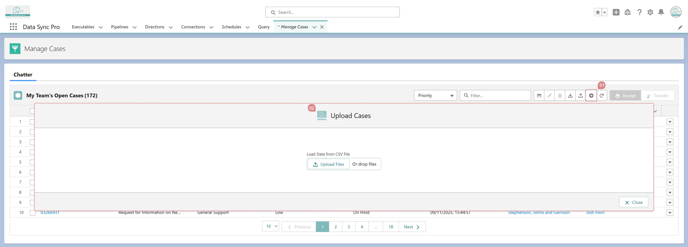

Yes. Associate a #Data Loader with a #Data List by setting the Q: Data Loader field on the #Data List Executable to the Executable that defines your Data Loader. This adds a standard list action that lets users run the load directly from the #Data List.
$CONTEXT_RECORD_ID may be used in the field mappings — ensuring the uploaded data ties directly to the Lightning record where the #Data Loader is invoked, for context-aware data loading.
